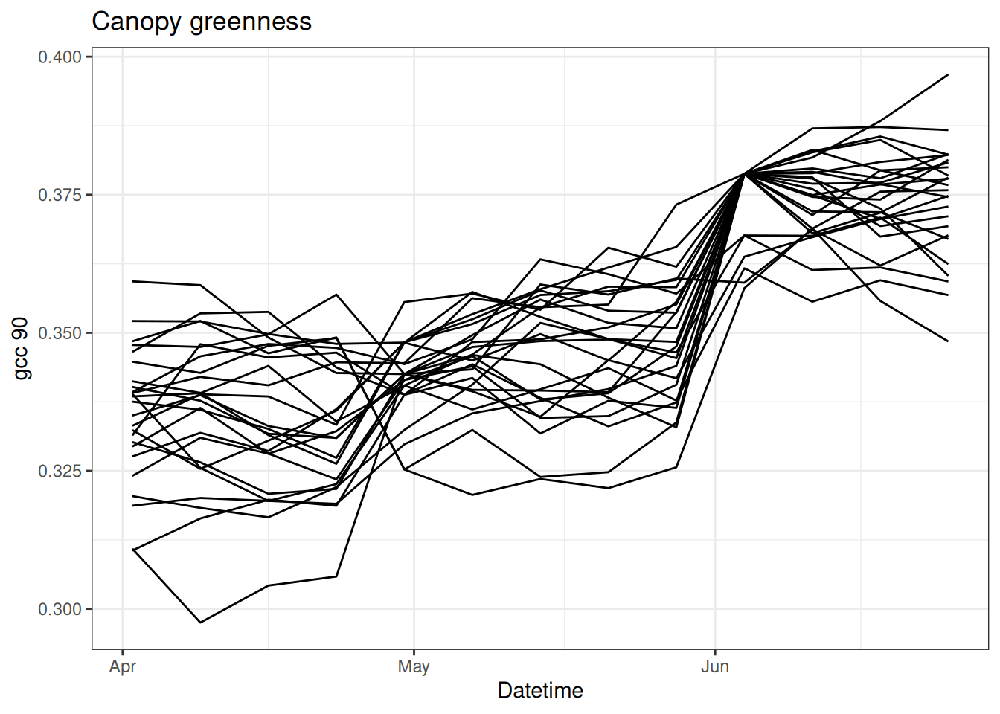
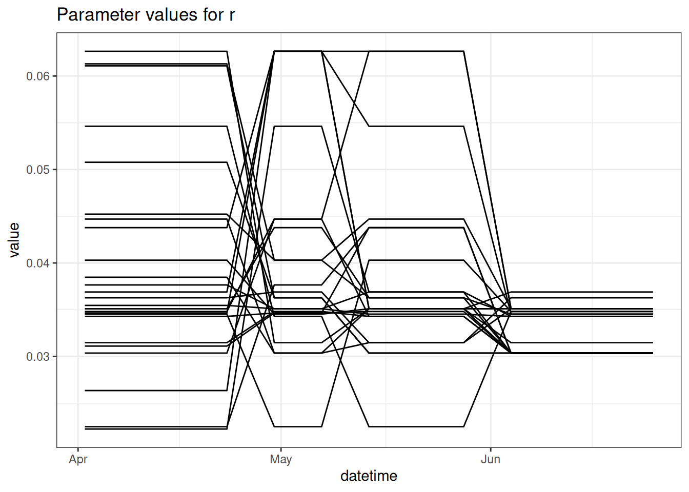

library(tidyverse)
df <- read_csv("https://sdsc.osn.xsede.org/bio230014-bucket01/challenges/targets/project_id=neon4cast/duration=P1D/phenology-targets.csv.gz", show_col_types = FALSE) |>
filter(variable == "gcc_90" & site_id == "CPER",
datetime > as_date("2023-04-01") & datetime < as_date("2023-06-30"),
wday(datetime) == 1)15 Data assimilation using the particle filter
15.1 Review of Batch vs Sequential Methods
Before beginning the introduction of the particle filter it is important to revisit the MCMC-MH approach that we used to estimate the parameters of a Bayesian model. Here is the general algorithm again:
for(i in 1:num_iterations){
Choose new parameters based on previous parameters
for(t in 1:length_of_time_series){
Make predictions over full time series
}
Calculate likelihood of data given model and current parameters
Calculate probability of priors given current parameters
Accept or reject parameters
}Above, you see that the outermost for-loop is looping over the number of iterations (num_iterations). The inner loop is looping over the length of the time series (length_of_time_series). Therefore, this approach tests each parameter value choice in an iteration (and latent state if using a state space model) over ALL time points in the time series. As a result, we call this a batch method because it considers all data as a single “batch” of data.
Strengths of the batch method are:
- The parameters are consistent with all data
- Straightforward to estimate parameters, uncertainty parameters, and latent states
Weaknesses:
- Can be computationally slow
- Require re-fitting model if there is even a single new data point
Alternatively, sequential methods only analyze data one time point as a time. Here is general code for a sequential method - notice that the for-loop order is reversed
Calculate prior distribution of parameters
for(t in 1:length_of_time_series){
for(i in 1:num_of_particles){
Make predictions for each particle based on previous value for particle
}
Compare particle to data (likelihood or other technique)
Weight particles based on the comparsion to the data
Adjust particles based on weights
}In the sequential method we can restart at any time point, as long as we have the values for the states and parameters that are associated with each particle. When doing an iterative forecast, these values are what you would save to wait for new data to arrive.
15.2 Introduction to Particle Filter
There are many sequential data assimilation methods that make different assumptions about data and model distributions in order to simplify the analysis. Many of the methods emerged before the our massive computational resources or were developed for HUGE problems like assimilating terabytes of data into a global weather model that simulates the physics of the atmosphere at 25 km vertical resolution. Examples include the Kalman Filter, Extended Kalman Filter, Ensemble Kalman Filter, and 4D-var. These methods all heavily use matrix algebra which I have not introduced in this class. Since these methods commonly assume that the data and model errors are normally distributed, the numerical version (Ensemble Kalman Filter) can run fewer particles (in this case: ensemble members) because it doesn’t take as many samples to estimate the mean and variance of a distribution than it does to estimate the full distribution
Here, I introduce the particle filter. The particle filter is a sequential method that will be more familiar to those that have learned the Bayesian methods that we have covered in the earlier chapters (Chapter 14). It has the concept of a likelihood, of which you are well versed (Chapter 13). The particle filter does not assume a specific distribution of the data and model error so it requires more particles to estimate the full distributions. As a result, it is more appropriate for “smaller” problems like the ones we are tackling in this book
The particle filter is quite simple
- Initialize a set of particles: Set the initial distribution of the states for each particle and, if estimating parameters, initial distribution of parameters that you want to estimate. Think of this as your initial priors.
- Predict the next time step using your process model for each particle. Add process uncertainty to each particle (i.e.,
rnorm) - If there are observations at the time-step, calculate the likelihood of the data given the particle just like we calculated the likelihood in the likelihood and Bayesian exercises. For example:
LL <- dnorm(obs, mean = pred, sd = sd_obs). You will typically use the uncertainty of the observations in the likelihood because you have already included the process uncertainty in #2. If observations are not available at the time step, then continue to the time step. - If there are observations at the time-step, resample the particles using the likelihood as the weights (don’t forget to exponentiate the likelihood if you logged it in #3, the weights must be probabilities rather than log probabilities). The weighted sampling, with replacement, will randomly pick the more likely particles more often. You will keep the same number of particles but the values for each particle will change. Less likely particles will be replaced with more likely particles (though the less likelihood particles can still be selected). Be sure to resample all states together and, if also estimating parameters, the parameters as well. The key to resampling is the following:
## calculate likelihood (weight) for one state with an observation at that time-step
## The dimensiosn of x
wt <- dnorm(obs[t], mean = x[t, ], sd = sd_data)
# Normalize the weights
wt_norm <- wt / sum(wt)
## resample ensemble members in proportion to their weight.
## Since the total number of samples = the number of particles then you will preserve the
## Same number of particles
resample_index <- sample(1:num_particles, num_particles, replace = TRUE, prob = wt_norm)
##Use the index to resample
x[t, ] <- x[t, resample_index]- Continue to next time step.
Fundamentally, the particle filter depends on two concepts that you have already been exposed to: likelihood and sampling from a set of particles (you sampled iterations from MCMC in previous exercises).
Specifically we refer to the particle filter described above as a bootstrap particle filter.
15.3 Example of Particle Filter
Here is an example of the particle filter applied to canopy greenness data at a NEON site. Canopy greenness is the relative greenness of a photograph take by a camera located above the vegetation canopy (called a phenocam). Greenness is qualified using the 90% percentile of the daily GCC (GCC = green / (green + red + blue)), called the gcc_90. gcc_90 measures spring changes in vegetation.
First load in data. We are only going to focus on the 13 weeks of the data at a single site (CPER).
Figure 15.1 shows the data for CPER
ggplot(df, aes(x = datetime, y = observation)) +
geom_point() +
labs(x = "Datetime", y = "gcc 90", title = "Canopy greenness") +
theme_bw()15.3.1 Particle Filter with no-observations
First we are going to run the particle filter with all data missing. This is equal to the random walk.
The sd_add is the model process uncertainty.
The sd_obs is the observation uncertainty. It is also used to set the initial condition uncertainity since we start the particle filter on a day with an observation.
The key decision is the num_particles. More is always better but it comes at a computational and computer memory cost.
num_particles <- 25
obs <- df$observation
num_time_steps <- length(obs)
#This sets all the observations to NA after the first
obs[2:num_time_steps] <- NA
sd_add <- 0.005
sd_obs <- 0.01
x <- array(NA, dim = c(num_time_steps, num_particles))
x[1, ] <- rnorm(num_particles, mean = obs[1], sd = sd_obs)
x_prior <- x
x_prior[1, ] <- x[1, ]
for(t in 2:num_time_steps){
## forward step
for(m in 1:num_particles){
x[t, m ] <- x[t - 1, m ] + rnorm(1, mean = 0, sd = sd_add)
}
x_prior[t, ] <- x[t, ]
## analysis step
if(!is.na(obs[t])){
## calculate Likelihood (weights)
wt <- dnorm(obs[t], mean = x[t, ], sd = sd_obs)
## calculate likelihood (weight)
wt_norm <- wt / sum(wt)
## resample ensemble members in proportion to their weight
resample_index <- sample(1:num_particles, num_particles, replace = TRUE, prob = wt_norm)
x[t, ] <- x[t, resample_index] ## update state
}
}Figure 15.2 shows each individual particle.
tibble(time = df$datetime,
as_tibble(x)) %>%
pivot_longer(cols = -time, names_to = "ensemble", values_to = "x") |>
#mutate(x = exp(x)) |>
ggplot(aes(x = time, y = x, group = factor(ensemble))) +
geom_line() +
labs(x = "Datetime", y = "gcc 90", title = "Canopy greenness") +
theme_bw()Lets save the output as a different name so we can compare to a PF with observations.
x_no_obs <- x15.3.2 PF with observations
Now we can examine how the PF uses observations to update the model and modify the trajectory. The following is the same as above except that there are data at week 1, 5, and 10.
obs[c(5, 10)] <- df$observation[c(5, 10)]
x <- array(NA, dim = c(num_time_steps, num_particles))
x[1, ] <- rnorm(num_particles, mean = obs[1], sd = sd_obs)
x_prior <- x
x_prior[1, ] <- x[1, ]
for(t in 2:num_time_steps){
## forward step
for(m in 1:num_particles){
x[t, m ] <- x[t - 1, m ] + rnorm(1, mean = 0, sd = sd_add)
}
x_prior[t, ] <- x[t, ]
## analysis step
if(!is.na(obs[t])){
## calculate Likelihood (weights)
wt <- dnorm(obs[t], mean = x[t, ], sd = sd_obs) ## calculate likelihood (weight)
wt_norm <- wt / sum(wt)
## resample ensemble members in proportion to their weight
resample_index <- sample(1:num_particles, num_particles, replace = TRUE, prob = wt_norm)
x[t, ] <- x[t, resample_index] ## update state
}
}Figure 15.3 shows the particles with the observations. You can see how the particles are adjusted when data are present.
tibble(time = df$datetime,
as_tibble(x)) %>%
pivot_longer(cols = -time, names_to = "ensemble", values_to = "x") |>
ggplot(aes(x = time, y = x, group = factor(ensemble))) +
geom_line() +
labs(x = "Datetime", y = "gcc 90", title = "Canopy greenness") +
theme_bw()
Save the output as a different object to compare to other PF simulations
x_with_obs <- xNow we can compare the influence of data assimilation on the last 3 weeks of the time-series (think of this as a 3-week forecast)
no_obs <- tibble(time = df$datetime,
as_tibble(x_no_obs)) %>%
pivot_longer(cols = -c("time"), names_to = "ensemble", values_to = "x") %>%
mutate(type = "no obs")
with_obs <- tibble(time = df$datetime,
as_tibble(x_with_obs)) %>%
pivot_longer(cols = -c("time"), names_to = "ensemble", values_to = "x") %>%
mutate(type = "with obs")
combined <- bind_rows(no_obs, with_obs)
df$obs_in_fit <- obs
combined %>%
group_by(time, type) %>%
summarise(mean = mean(x),
upper = quantile(x, 0.975),
lower = quantile(x, 0.025),.groups = "drop") %>%
ggplot(aes(x = time, y = mean)) +
geom_line(aes(color = type)) +
geom_ribbon(aes(ymin = lower, ymax = upper, color = type, fill = type), alpha = 0.2) +
geom_point(data = df, aes(x = datetime, y = observation), color = "red") +
geom_point(data = df, aes(x = datetime, y = obs_in_fit), color = "black") +
labs(x = "Datetime", y = "gcc 90", title = "Canopy greenness") +
theme_bw()15.3.3 PF through a Bayesian lens
The particle filter is fundamentally a Bayesian analysis.
- Prior: The ensemble predictions before data assimilation.
- Likelihood: the distribution of the data with uncertainty.
- Posterior: The ensemble and weights after data assimilation.
The figure below illustrates these Bayesian concepts. In the figure, the ensemble predictions are converted to a smoothed histogram and the observations are converted normal distributions using the observation standard deviation. Data are assimilated at time step 5 and 10. The prior, likelihood, and posterior are shown on the days that data are assimilated. Only prior is show on the other days because no data are available to convert to a posterior.
combined |>
ggplot(aes(x = x, y = y, color = type, group = date)) +
geom_point(size = 0.4) +
labs(x = "Datetime", y = "gcc 90", title = "Canopy greenness") +
theme_bw()15.3.4 PF with parameter estimation
The estimate of parameters using a PF is also straightforward. Here we model the change in gcc_90 using an equation with a growth term included. The growth rate is highest for a defined day of the year (doy) with a bell shape around that doy.
x[t-1, m] + r[t, m] * exp(-(1 / (2 * b)) * (doy[t] - a)^2)The values for a (the peak doy) and b (the width of the bell shape) are provided.
We are estimating r, (the maximum growth rate). Just like we need to initialize the states at the first time step, we will initialize the distribution of the b1 at the first time step using a normal distribution with a mean = r_mean and sd = r_sd.
num_particles <- 25
obs <- rep(NA, length(df$observation))
obs[1] <- df$observation[1]
obs[c(5, 7, 10)] <- df$observation[c(5, 7, 10)]
sd_add <- 0.005
sd_obs <- 0.01
a <- 141
b <- 30
r_mean <- 0.04 #0.025
r_sd <- 0.01
x <- array(NA, dim = c(num_time_steps, num_particles))
x[1, ] <- rnorm(num_particles, obs[1], sd = sd_obs)
r <- array(NA, dim = c(num_time_steps, num_particles))
r[1, ] <- rnorm(num_particles, mean = r_mean, sd = r_sd)
doy <- yday(df$datetime)Now run the PF with the model. You need to also carry through the values for r.
Importantly, the distribution of r carries through from the previous time-step. When there is an observation, r is resampled using the same index that the states are resampled. This ensures that the parameters match the states from the same particle.
for(t in 2:num_time_steps){
for(m in 1:num_particles){
r[t, m] <- r[t-1, m]
pred <- x[t-1, m] + r[t, m] * exp(-(1 / (2 * b)) * (doy[t] - a)^2)
x[t, m ] <- pred + rnorm(1, mean = 0, sd = sd_add)
}
## analysis step
if(!is.na(obs[t])){
## calculate Likelihood (weights)
wt <- dnorm(obs[t], mean = x[t, ], sd = sd_obs) ## calculate likelihood (weight)
wt_norm <- wt / sum(wt)
## resample ensemble members in proportion to their weight
resample_index <- sample(1:num_particles,
num_particles,
replace = TRUE,
prob = wt_norm)
x[t, ] <- x[t, resample_index] ## update state
r[t, ] <- r[t, resample_index] ## Parameter update
}
}Figure 15.5 shows the states from the PF when parameter fitting is included
tibble(time = df$datetime,
obs = obs,
as_tibble(x)) %>%
pivot_longer(cols = -c(time, obs), names_to = "ensemble", values_to = "x") %>%
ggplot() +
geom_line(aes(x = time, y = x, group = factor(ensemble))) +
geom_point(aes(x = time, y = obs), color = "red") +
labs(x = "Datetime", y = "gcc 90", title = "Canopy greenness") +
theme_bw()And visualize the time-evolution of the parameter (Figure 15.6). There are two new concepts illustrated below:
- parameters distributions evolve through time. As a result the distribution of parameters is strongly influenced by the most recent observations. The distributions produced by a PF are not the same as the distributions produced by MCMC chain.
- particles can have degeneracy, whereby the values of the parameters collapse down to one or a few values. This occurs because the PF does not propose new parameter values, it only selects (through resampling) parameter values from the initial set that you started with. Over the time-step the PF weeds out bad parameters and only a few ones are left. This is a major issue with a PF. Degeneracy can also occur in the states but since we are adding process uncertainty (
sd_add) the particles are able to separate through time. There are a couple of ways to solve degeneracy - increase the number of particles so you sample more initial parameter values or add random noise to each parameter between times-steps, similar to adding process noise to model states. It is important to find the right account of random noise to allow parameters to evolve through time but not too much where the spread becomes unreasonable if data is not available to assimilate and reduce the spread.

15.3.5 Sensitivity to number of particles
The number of particles is a key decision when using a PF. To explore the sensitivity of the PF to the number of particles, here is a function that can be reused with different numbers of particles. It is the same as the dynamic model above and returns the r and r for the particles in a list.
bootstrap_pf <- function(num_particles, sd_add = 0.005, sd_obs = 0.01){
x <- array(NA, dim = c(num_time_steps, num_particles))
x[1, ] <- rnorm(num_particles, obs[1], sd = sd_obs)
r <- array(NA, dim = c(num_time_steps, num_particles))
r[1, ] <- rnorm(num_particles, mean = r_mean, sd = r_sd)
### resampling bootstrap particle filter
for(t in 2:num_time_steps){
## The new
for(m in 1:num_particles){
r[t, m] <- r[t-1, m]
pred <- x[t-1, m] + r[t, m] * exp(-(1 / (2 * b)) * (doy[t] - a)^2)
x[t, m ] <- pred + rnorm(1, mean = 0, sd = sd_add)
}
## analysis step
if(!is.na(obs[t])){
## calculate Likelihood (weights)
wt <- dnorm(obs[t], mean = x[t, ], sd = sd_obs) ## calculate likelihood (weight)
wt_norm <- wt / sum(wt)
## resample ensemble members in proportion to their weight
resample_index <- sample(1:num_particles, num_particles, replace = TRUE, prob = wt_norm)
x[t, ] <- x[t, resample_index] ## update state
r[t, ] <- r[t, resample_index] ## Parameter update
}
}
return(list(x = x, r = r))
}First, run the PF using 10, 100, and 1000 particles
pf_10 <- bootstrap_pf(10)
pf_100 <- bootstrap_pf(100)
pf_1000 <- bootstrap_pf(1000)
p10 <- tibble(time = df$datetime,
as_tibble(pf_10$x)) %>%
pivot_longer(cols = -c("time"), names_to = "ensemble", values_to = "x") %>%
mutate(type = "pf_10")
p100 <- tibble(time = df$datetime,
as_tibble(pf_100$x)) %>%
pivot_longer(cols = -c("time"), names_to = "ensemble", values_to = "x") %>%
mutate(type = "pf_100")
p1000 <- tibble(time = df$datetime,
as_tibble(pf_1000$x)) %>%
pivot_longer(cols = -c("time"), names_to = "ensemble", values_to = "x") %>%
mutate(type = "pf_1000")
df$obs_in_fit <- obsAnd combine to a single plot (Figure 15.7). You see the width of the 95% confidence interval increases substantially from 10 to 1000 particles but then is similar from 1000 to 10000. This reflects what we learned from the very first exercise where you drew random samples from a distribution and found that between 1000 and 10000 random samples were required to approximate the distribution well.
bind_rows(p10, p100, p1000) %>%
group_by(time, type) %>%
summarise(mean = mean(x),
upper = quantile(x, 0.975),
lower = quantile(x, 0.025),.groups = "drop") %>%
ggplot(aes(x = time, y = mean)) +
geom_line(aes(color = type)) +
geom_ribbon(aes(ymin = lower, ymax = upper, color = type, fill = type), alpha = 0.2) +
geom_point(data = df, aes(x = datetime, y = observation), color = "red") +
geom_point(data = df, aes(x = datetime, y = obs_in_fit), color = "black") +
labs(x = "Datetime", y = "gcc 90", title = "Canopy greenness") +
theme_bw()15.3.6 Sensitivity to observation uncertainty
We can also explore the sensitivity of the PF to observation uncertainty. Intuitively, we should have stronger update (i.e., the particles are adjusted to be closer to the observation) when there is less uncertainty in the observations. The code below explores whether this intuition is correct.
pf_low_obs <- bootstrap_pf(5000, sd_obs = 0.001)
pf_high_obs <- bootstrap_pf(5000, sd_obs = 0.1)
pf_low <- tibble(time = df$datetime,
as_tibble(pf_low_obs$x)) %>%
pivot_longer(cols = -c("time"), names_to = "ensemble", values_to = "x") %>%
mutate(type = "low obs uncertainity")
pf_high <- tibble(time = df$datetime,
as_tibble(pf_high_obs$x)) %>%
pivot_longer(cols = -c("time"), names_to = "ensemble", values_to = "x") %>%
mutate(type = "high obs uncertainity")
df$obs_in_fit <- obsDoes Figure 15.8 match your intuition?
bind_rows(pf_low, pf_high) %>%
group_by(time, type) %>%
summarise(mean = mean(x),
upper = quantile(x, 0.975),
lower = quantile(x, 0.025),.groups = "drop") %>%
ggplot(aes(x = time, y = mean)) +
geom_line(aes(color = type)) +
geom_ribbon(aes(ymin = lower, ymax = upper, color = type, fill = type), alpha = 0.2) +
geom_point(data = df, aes(x = datetime, y = observation), color = "red") +
geom_point(data = df, aes(x = datetime, y = obs_in_fit), color = "black") +
labs(x = "Datetime", y = "gcc 90", title = "Canopy greenness") +
theme_bw()15.4 Key points
It is important to consider the relative balance of model uncertainty and observation uncertainty. If the Observation uncertainty > Model uncertainty, the data assimilation ignores the observations. In this case, the “posteriors” are the prior (the model predictions are favored). If model uncertainty > observation uncertainty, the posterior follows the data and ignores the model predictions when the predictions are different from the observations. In this case, the data distribution (likelihood) is the posterior. Evenly balanced uncertainty will result in posteriors that are a blend of the model ensemble distribution and data distribution.
As another way to view the balance of uncertainty, you are only able to use the set of particle ensemble members (priors) for resampling (or re-weighting) to generate the posteriors. Therefore, it is important to consider how the spread in your ensemble is generated. If your ensemble lacks any particles near the data then it can’t sample particles near the data. Therefore, if it is critical for your predictions to follow the data, then you need to generate more spread in your particle ensemble so that there are at least a few particles that are near observations.
15.5 Reading
15.6 Problem set
The problem set is located in particle_filter_problem_set.qmd in https://github.com/frec-5174/book-problem-sets. You can fork the repository or copy the code into your own quarto document